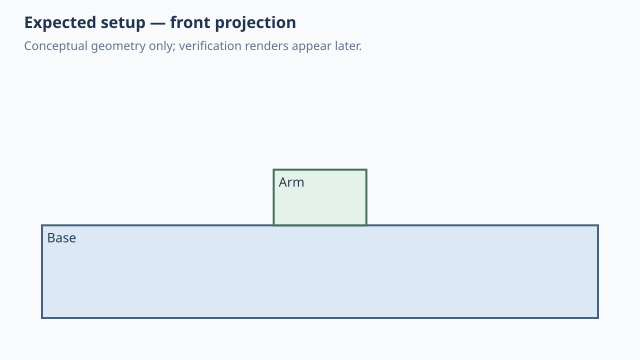

← Qualification / Native attachment clocking angle
Forge qualification case
NOT RUNQ1 Q2 documented
Native attachment clocking angle
1. Test setup

Test goal
Verify that attach(angle=...) remains a native rigid-joint turn rather than being pre-baked into child geometry or an occurrence rotation.
Pass criteria
The Arm sits on the Base TOP face and its 30x10 footprint is quarter-turned to 10x30 in world XY.
2. Implementation under test
Fixture source
"""Qualification: attach(angle=...) is a native joint clocking value."""
class Base:
WIDTH = 60.0
DEPTH = 60.0
HEIGHT = 10.0
def build(self):
return Box(self.WIDTH, self.DEPTH, self.HEIGHT)
class Arm:
LENGTH = 30.0
WIDTH = 10.0
HEIGHT = 6.0
def build(self):
return Box(self.LENGTH, self.WIDTH, self.HEIGHT)
class AttachAngle:
def build(self):
base = Base()
arm = Arm().attach(
base,
parent=Anchor.TOP,
child=Anchor.BOTTOM,
angle=90,
)
return base + arm
AttachAngle()
Public Forge API used
Arm().attach(base, parent=Anchor.TOP, child=Anchor.BOTTOM, angle=90)
Forge model represented by this fixture
One square Base and one non-square 30x10 Arm. The child definition stays neutral; only the attachment carries the quarter-turn.
3. Generated SolidCraft relationship
joint.create(type='rigid', angle=90) is the only authored clocking relationship. Forge does not rotate the Arm occurrence separately.
Show generated relationship / command details
[
{
"command": "joint.create",
"params": {
"type": "rigid",
"name": "Attach Arm:1 to Base:1",
"a": {
"occurrence": "Base:1",
"face": [
0.0,
0.0,
10.0
]
},
"b": {
"occurrence": "Arm:1",
"face": [
0.0,
0.0,
10.0
]
},
"angle": 90.0
}
}
]3. Results
Native result data was not supplied to this site build. Run the native qualification for measured results.
No source-matched native verification was supplied to this site build. The case sheet and command contract are still shown.
6. Evidence and references
Raw evidence
Show generated files and measurements
Reference models
These comparisons clarify concepts; Forge does not promise API compatibility with them.
- SolidCraft: The joint angle is the persisted native relationship value that clocks the child about the attachment normal.
- BOSL2: Conceptually comparable to spin/clocking around an attachment normal, while the child geometry remains reusable and neutral.